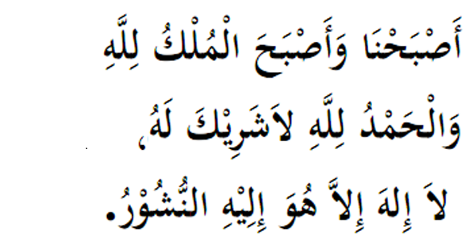

|

Terjemahan " Kami hayati pagi ini ya Allah di mana pada pagi ini kerajaan alam ini di tanganMu. Puji untuk Allah, tidak ada sekutu bagi-Nya. Tidak ada Tuhan sebenarnya melainkan Dia. KepadaNya kami bakal dihimpunkan." Fadhilat Wirid Rasulullah (SAW) selalu membaca ayat tersebut di waktu pagi dan petang. (Riyawat Ibnu Sunni dan Al - Bazzar) |